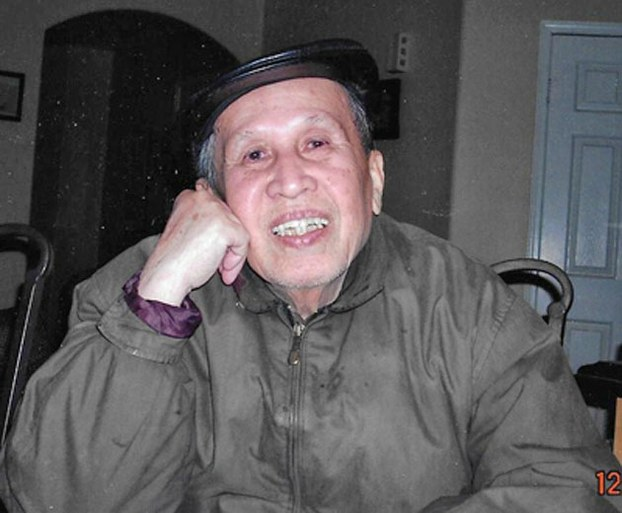

Võ Phiến tên thật Đoàn Thế Nhơn (sinh 20 tháng 10 năm 1925 tại huyện Phù Mỹ, Bình Định; là một nhà văn Việt Nam. Ông là tác giả của 4 tiểu thuyết, 9 tập tuỳ bút, nhiều tập truyện ngắn, một tập thơ và nhiều tác phẩm phê bình tiểu luận. Ông còn có bút danh là Tràng Thiên.

.
Võ Phiến là con của ông giáo Đoàn Thế Cần và bà Ngô Thị Cương. Ông có người em ruột là Đoàn Thế Hối (sinh 1932) cũng là nhà văn với bút hiệu Lê Vĩnh Hoà. Khoảng 1933, bố mẹ cùng em ông xuống Rạch Giá còn ông vẫn ở lại Bình Định với bà nội. Ông theo học trường làng và trung học ở Quy Nhơn.
Năm 1942, ông ra Huế học trường Thuận Hóa và bắt đầu viết văn. Bài tùy bút đầu tiên Những đêm đông được ông viết năm 1943 và đăng trên báo Trung Bắc Chủ Nhật. Năm 1945, Võ Phiến đi bộ đội cho đến năm 1946 thì ông ra Hà Nội học trường Văn Lang. Năm 1948, ông kết hôn với bà Võ Thị Viễn Phố và dạy học ở trường trung học bình dân Liên Khu V.
Cuối năm 1954, Võ Phiến ra Huế làm việc tại Nha Thông tin một thời gian rồi chuyển vào lại Quy Nhơn, tại đây ông tự xuất bản hai tác phẩm đầu là Chữ tình (1956) và Người tù (1957), gửi bài đăng trên hai tạp chí Sáng Tạo và Bách Khoa.
Sau tác phẩm Mưa đêm cuối năm (1958, Sài Gòn), Võ Phiến bắt đầu được biết đến. Ông vào làm việc tại Sài Gòn và cộng tác với các báo Sáng Tạo, Thế Kỷ 20, Văn, Khởi Hành, Mai, Tân Văn, Bách Khoa...
Năm 1962, Võ Phiến lập nhà xuất bản Thời Mới.
Sau 30 tháng 4 năm 1975, ông định cư tại Los Angeles, Hoa Kỳ. Võ Phiến tiếp tục xây dựng nền văn học Việt Nam tại hải ngoại, xuất bản tập san Văn Học Nghệ thuật từ 1978 đến 1979, và từ 1985 đến 1986. Ông sống tại Quận Cam, California, Hoa Kỳ. Ông qua đời lúc 7 giờ tối ngày 28/09/2015 tại Santa Ana, California, Hoa Kỳ, hưởng thọ 90 tuổi
Nhận xét
Giáo sư Trần Đình Sử, nhà phê bình, đánh giá rất cao các bài tùy bút của Võ Phiến: “Trước đây ta cho rằng Nguyễn Tuân viết tùy bút số một, nhưng còn Võ Phiến. Nhiều khi tôi trộm nghĩ tùy bút Võ Phiến không hề thua kém, thậm chí có khi hơn.”